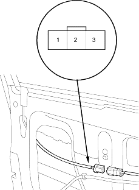
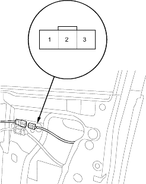

- Remove the door panel (see page 20-7).
- Disconnect the 3P connector from the key cylinder switch.
Wire side of female terminals

- Check for continuity between the terminals.
- There should be continuity between the No. 2 and No. 3 terminals when the door key cylinder switch is LOCK position.
- There should be continuity between the No. 1 and No. 2 terminals when the door key cylinder switch is UNLOCK position.
- Remove the door panel (see page 20-144).
- Disconnect the 3P connector from the key cylinder switch.
Wire side of female terminals

- Check for continuity between the terminals.
- There should be continuity between the No. 2 and No. 3 terminals when the door key cylinder switch is LOCK position.
- There should be continuity between the No. 1 and No. 2 terminals when the door key cylinder switch is UNLOCK position.